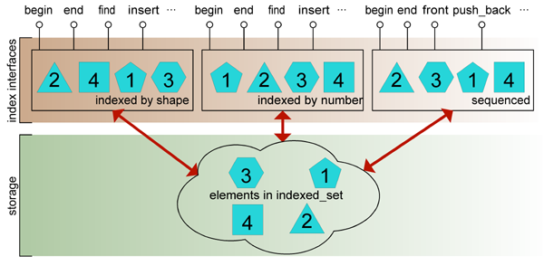

Boost.IndexedSet TutorialBoost.IndexedSet Tutorial
Boost.IndexedSet TutorialBoost.IndexedSet Tutorial
STL containers are designed about the concept that each container controls its
own collection of elements, giving access to them in a manner specified by the
container's type: so, an std::set maintains the elements ordered
by a specified sorting criterium, std::list allows for free
positioning of elements along a linear sequence, and so on.
Sometimes, the necessity arises of having different access interfaces
to the same underlying collection: for instance, some data might need to be
sorted according to more than one comparison predicate, or a bidirectional list
might benefit from a supplemental logarithmic lookup interface. In these
situations, programmers typically resort to manual compositions of different
containers, a solution that generally involves a fair amount of code
devoted to preserve the synchronization of the different parts of
the composition. Boost.IndexedSet allows for the specification of
indexed_set containers comprised of one or more indices with
different interfaces to the same collection of elements. The resulting constructs
are conceptually cleaner than manual compositions, and often perform much better.
An important design decision has been taken that the indices of a given
indexed_set instantiation be specified at compile time: this
gives ample room for static type checking and code optimization.
Boost.IndexedSet takes inspiration from basic concepts of indexing arising in the
theory of relational databases, though it is not intended to provide a full-fledged
relational database framework. indexed_set integrates seamlessly into
the STL container/algorithm design, and features some extra capabilities regarding
lookup operations and element updating which are useful extensions even for
single-indexed containers.

Fig. 1: Diagram of an indexed_set with three indices.
The figure above depicts an indexed_set composed of three indices:
the first two present a set-like interface to the elements sorted by
shape and id, respectively, while the latter index provides the functionality
of a bidirectional list in the spirit of std::list. These
indices act as "views" to the internal collection of elements, but they do not only
provide read access to the set: insertion/deletion methods are also implemented much
as those of std::sets or std::lists. Insertion of an
element through one given index will only succeed if the uniqueness constraints of all
indices are met.
All the types of Boost.IndexedSet reside in namespace ::boost::indexed_sets.
Additionaly, the main class template indexed_set and global functions
get and project are lifted to namespace ::boost
by means of using declarations. For brevity of exposition, the fragments
of code in the documentation are written as if the following declarations were in effect:
using namespace ::boost; using namespace ::boost::indexed_sets;
We introduce the main concepts of Boost.IndexedSet through the study of two typical use cases.
STL sets and multisets are varying-length containers where elements are efficiently sorted according to a given comparison predicate. These container classes fall short of functionality when the programmer wishes to efficiently sort and lookup the elements following a different sorting criterium. Consider for instance:
struct employee { int id; std::string name; employee(int id,std::string name):id(id),name(name){} bool operator<(const employee& e)const{return id<e.id;} };
The fact that IDs are unique to each employee is reflected by the way
operator< is defined, so a natural data structure for storing of
employees is just a std::set<employee>. Now,
if one wishes to print out a listing of all employees in alphabetical order, available
solutions may have disadvantages either in terms of storage space, complexity or ease
of maintenance:
employee::name.
Boost.IndexedSet features regular indices,
designed to help programmers in need of sequences of elements for which more than
one sorting criteria are relevant. We do so by defining an indexed_set
instantiation composed of several regular indices: each index, viewed in isolation,
behaves much as a regular std::set (or std::multiset), whilst
the overall integrity of the entire data structure is preserved. Our example problem
thus can be solved with Boost.IndexedSet as follows:
// define a multiply indexed set with indices by id and name typedef indexed_set< employee, index_list< unique<identity<employee> >, // sort by employee::operator< non_unique<member<employee,std::string,&employee::name> > // sort by less<string> on name > > employee_set; void print_out_by_name(const employee_set& es) { // get a view to index #1(name) const employee_set::nth_index_type<1>::type& name_index=es.get<1>(); // use i as a regular std::set std::copy(name_index.begin(),name_index.end(),std::ostream_iterator<employee>(std::cout)); }
Instead of a single comparison predicate type, as it happens for STL associative
containers, indexed_set is passed a typelist of index
specifications (index_list), each one inducing the corresponding index.
Indices are accessed via
get<N>()
where N ranges between 0 and the number of comparison
predicates minus one. The functionality of index #0 can be accessed directly from an
indexed_set object without using get<0>(): for instance,
es.begin() is equivalent to es.get<0>().begin().
This study case allows us to introduce so-called sequenced indices, and how they interact with regular indices to construct powerful containers. Suppose we have a text parsed into words and stored in a list like this:
typedef std::list<std::string> text_container; std::string text= "Alice was beginning to get very tired of sitting by her sister on the bank, " "and of having nothing to do: once or twice she had peeped into the book her " "sister was reading, but it had no pictures or conversations in it, 'and what " "is the use of a book,' thought Alice 'without pictures or conversation?'"; // feed the text into the list text_container tc; boost::tokenizer<boost::char_separator<char> > tok (text,boost::char_separator<char>(" \t\n.,;:!?'\"-")); std::copy(tok.begin(),tok.end(),std::back_inserter(tc));
If we want to count the occurrences of a given word into the text we will resort
to std::count:
std::size_t occurrences(const std::string& word) { return std::count(tc.begin(),tc.end(),word); }
But this implementation of occurrences performs in linear time, which
could be unacceptable for large quantities of text. Similarly, other operations like
deletion of selected words are just too costly to carry out on a
std::list:
void delete_word(const std::string& word) { tc.remove(word); // scans the entire list looking for word }
When performance is a concern, we will need an additional data structure that indexes
the elements in tc, presumably by alphabetical order. Boost.IndexedSet
allows precisely to do this through the combination of sequenced and regular indices:
// define an indexed_set with a list-like index and a regular index typedef indexed_set< std::string, index_list< sequenced<>, // list-like index non_unique<identity<std::string> > // words sorted by alphabetical order > > text_container; std::string text=... // feed the text into the list text_container tc; boost::tokenizer<boost::char_separator<char> > tok (text,boost::char_separator<char>(" \t\n.,;:!?'\"-")); std::copy(tok.begin(),tok.end(),std::back_inserter(tc));
So far, the substitution of indexed_set for std::list
does not show any advantage. The code for inserting the text into the container
does not change as sequenced indices provide an interface similar to that of
std::list (no explicit access to this index through
get<0>() is needed as indexed_set inherits the
functionality of index #0.) But the specification of an additional regular index
allows us to implement occurrences and delete_word
in a much more efficient manner:
std::size_t occurrences(const std::string& word) { // get a view to index #1 text_container::nth_index_type<1>::type& sorted_index=tc.get<1>(); // use sorted_index as a regular std::set return sorted_index.count(word); } void delete_word(const std::string& word) { // get a view to index #1 text_container::nth_index_type<1>::type& sorted_index=tc.get<1>(); // use sorted_index as a regular std::set sorted_index.erase(word); }
Now, occurrences and delete_word have logarithmic
complexity. The programmer can use index #0 for accessing the text as with
std::list, and resort to index #1 when logarithmic lookup is needed.
The indices of an indexed_set instantiation are specified by
means of the
index_list construct. For instance, the instantiation
typedef indexed_set< employee, index_list< unique<identity<employee> >, non_unique<member<employee,std::string,&employee::name> > > > employee_set;
is comprised of a unique regular index and a non-unique regular index, while in
typedef indexed_set< std::string, index_list< sequenced<>, non_unique<identity<std::string> > > > text_container;
we specifiy two indices, the first of sequenced type,
the second a non-unique regular index. In general, we
can specify an arbitrary number of indices: each of the arguments of
index_list is called an
index specifier.
Depending of the type of index being specified, the corresponding specifier
will need additional information: for instance, the specifiers unique
and non_unique are provided with a
key extractor and an optional
comparison predicate which jointly indicate
how the sorting of elements will be performed.
An indexed_set instantiation can be declared without supplying
the index_list part: in this case, default index values are taken
so that the resulting type is equivalent to a regular std::set.
Concretely, the instantiation
indexed_set<(element)>
is equivalent to
indexed_set<(element),index_list<unique<identity<(element)> > > >
In order to retrieve (a reference to) an index of a given indexed_set,
the programmer must provide its order number, which is cumbersome and not very
self-descriptive. Optionally, indices can be assigned tags (C++ types) that
act as more convenient mnemonics. If provided, tags must be passed as the
first parameter of the corresponding index specifier. The following is a revised version of
employee_set with inclusion of tags:
// tags struct name{}; typedef indexed_set< employee, index_list< unique<identity<employee> >, non_unique<tag<name>,member<employee,std::string,&employee::name> > > > employee_set;
Any type can be used as a tag for an index, although in general one will choose names that are descriptive of the index they are associated with. The tagging mechanism allows us to write expressions like
typedef employee_set::index_type<name>::type employee_set_by_name; employee_set_by_name::iterator it=es.get<name>().begin();
If no tag is provided for an index (as it is the case for index #0 of the previous
example), accessing to that index can only be performed by number. Note the existence
of two different typedefs nth_index_type and
index_type for referring to an index by number and by tag, respectively;
for instance,
employee_set::nth_indexed_type<1>::type is the type of
index #1,employee_set::indexed_type<name>::type is the type of the index
tagged with name (the same index #1 in this case.)get(), on the other hand, is overloaded to serve both styles of access:
employee_set::index_type<name>::type& name_index=es.get<name>(); employee_set::nth_index_type<1>::type& name_index2=es.get<1>(); // same index
Additionally, the tag class template accepts several tags for one
index, that we can use interchangeably: for instance, the specification of index #1
in the previous example can be rewritten to hold two different tags
name and by_name:
// tags struct name{}; struct by_name{}; typedef indexed_set< ... non_unique<tag<name,by_name>,member<employee,std::string,&employee::name> > ... > employee_set;
Currently, Boost.IndexedSet provides the following index types:
std::sets do, and
provide a similar interface. There are unique and non-unique
variants: the former does not allow for duplicates, while the latter permits
them (like std::multiset.)std::list: they arrange the elements as if in a bidirectional
list.
Regular indices sort the elements in an indexed_set according
to a specified key and an associated comparison predicate. These indices can
be viewed as analogues of the standard container std::set, and in fact
they do replicate its interface, albeit with some minor differences dictated
by the general constraints of Boost.IndexedSet.
Regular indices are classified into unique, which prohibit two elements to have the same index value, and non-unique indices, which allow for duplicates. Consider again the definition
typedef indexed_set< employee, index_list< unique<identity<employee> >, non_unique<member<employee,std::string,&employee::name> > > > employee_set;
In this instantiation of indexed_set, the first index is to be
treated as unique (since IDs are exclusive to each employee) and thus is declared using
unique, whereas the second index is non-unique (as the possibility exists
that say two John Smiths are hired in the same company), which is specified by the use
of non_unique.
The classification of regular indices in unique and non-unique has an impact on which
elements are allowed to be inserted into a given indexed_set; briefly put,
unique regular indices mimic the behavior of std::sets while non-unique
regular indices are similar to std::multisets. For instance, an
employee_set can hold the objects employee(0,"George Brown")
and employee(1,"George Brown"), but won't accept the insertion of an
employee object whose ID coincides with that of some previously inserted
employee.
More than one unique index can be specified. For instance, if we augment
employee to include an additional member for the Social Security number,
which is reasonably enough to be treated as unique, the following captures this design:
struct employee { int id; std::string name; int ssnumber; employee(int id,std::string name,int ssnumber):id(id),name(name),ssnumber(ssnumber){} bool operator<(const employee& e)const{return id<e.id;} }; typedef indexed_set< employee, index_list< unique<identity<employee> >, // sort by employee::operator< non_unique<member<employee,std::string,&employee::name> >, // sort by less<string> on name unique<member<employee,int,&employee::ssnumber> > // sort by less<int> on ssnumber > > employee_set;
Regular index specifiers in an index_list must conform to one of the
following syntaxes:
(type of index)<[(tag)[,(key extractor)[,(comparison predicate)]]]> (type of index)<[(key extractor)[,(comparison predicate)]]>
where (type of index) is unique for unique variants,
and non_unique for non-unique regular indices. The first optional
argument is used if tags are associated to the index.
We now proceed to briefly discuss the remaining arguments of an regular index
specifier.
The first template parameter (or the second, if tags are supplied)
in the specification of a regular index provides a key extraction predicate.
This predicate takes a whole element (in our example, a reference to an
employee object) and returns the piece of information by which
the sorting is performed. In most cases, one of the following two situations arises:
employee_set. The predefined
identity predicate
can be used here as a key extractor; identity returns as the key the
same object passed as argument.member, which returns
as the key a member of the element specified by a given pointer.employee_set. The
definition of the first index:
unique<identity<employee> >
specifies by means of identity that the whole element
objects serve as key for this index. On the other hand, in the second index:
non_unique<member<employee,std::string,&employee::name> >
we use member to extract the name part of the
employee object. The key type of this index is then
std::string.
Another common situation arises when the sorting is performed on the result
of a particular member function. This resembles the notion of
calculated indices supported by some relational databases.
In these cases, the key is not a data member of the element, but rather it is
a value returned by a particular member function. Boost.IndexedSet supports this
kind of key extraction through
const_mem_fun.
Consider the following extension of our example where sorting on the third index
is based upon the lenght of the name field:
struct employee { int id; std::string name; employee(int id,std::string name,int ssnumber):id(id),name(name){} bool operator<(const employee& e)const{return id<e.id;} // returns the length of the name field std::size_t name_length()const{return name.size();} }; typedef indexed_set< employee, index_list< unique<identity<employee> >, // sort by employee::operator< non_unique<member<employee,std::string,&employee::name> >, // sort by less<string> on name non_unique<const_mem_fun<employee,std::size_t,&employee::name_length> > // sort by less<int> on name_length() > > employee_set;
Example 2 in the examples section
provides a complete program showing how to use const_mem_fun.
Almost always you will want to use a const member function,
since elements in an indexed_set are treated as constant, much
as elements of an std::set. However, a
mem_fun
counterpart is provided for use with non-constant member functions, whose
applicability is discussed on the paragraph on
advanced features
of Boost.IndexedSet key extractors in the advanced topics section.
identity, member and const_mem_fun serve
most common situations in the design of an indexed_set. However, the
user is free to provide her own key extractors in more exotic situations, as long as
these conform to the Key
Extractor concept. For instance,
example 6 implements several key
extraction techniques called for when elements and/or keys are accessed via
pointers.
The last part of the specification of a regular index is the associated
comparison predicate, which must order the keys in a less-than fashion.
These comparison predicates are not different to those used by STL containers like
std::set. By default (i.e. if no comparison predicate is provided),
an index with keys of type key_type sorts the elements by
std::less<key_type>. Should other comparison criteria be needed,
they can be specified as an additional parameter in the index declaration:
// define a multiply indexed set with indices by id and by name // in reverse alphabetical order typedef indexed_set< employee, index_list< unique<identity<employee> >, // as usual non_unique< member<employee,std::string,&employee::name>, std::greater<std::string> // default would be std::less<std::string> > > > employee_set;
See also example 7 in the examples section for another application of user-defined comparison predicates.
A given regular index allows for lookup based on its key type, rather than the
whole element. For instance, to find Veronica Cruz in an
employee_set one would write:
employee_set es; ... typedef employee_set::index_type<name>::type employee_set_by_name; employee_set_by_name::iterator it=es.get<name>().find("Veronica Cruz");
As a plus, Boost.IndexedSet provides lookup operations accepting search keys
different from the key_type of the index, which is a specially useful
facility when key_type objects are expensive to create. Regular STL containers
fail to provide this functionality, which often leads to inelegant workarounds: consider for
instance the problem of determining the employees whose IDs fall on the range [0,100]. Given
that the key of employee_set index #0
is employee itself, on a first approach one would write the following:
employee_set::iterator p0=es.lower_bound(employee(0,"")); employee_set::iterator p1=es.upper_bound(employee(100,""));
Note however that std::less<employee> actually only depends
on the IDs of the employees, so it would be more convenient to avoid
the creation of entire employee objects just for the sake of
their IDs. Boost.IndexedSet allows for this: define an appropriate
comparison predicate
struct comp_id { // compare an ID and an employee bool operator()(int x,const employee& e2)const{return x<e2.id;} // compare an employee and an ID bool operator()(const employee& e1,int x)const{return e1.id<x;} };
and write now the search as
employee_set::iterator p0=es.lower_bound(0,comp_id()); employee_set::iterator p1=es.upper_bound(100,comp_id());
Here were are not only passing IDs instead of employee objects:
an alternative comparison predicate is passed as well. In general, lookup operations
of regular indices are overloaded to accept
compatible sorting
criteria. The somewhat cumbersone definition of compatibility in this context
is given in the reference, but roughly speaking we say that a comparison predicate
C1 is compatible with C2 if any sequence sorted by
C2 is also sorted with respect to C1.
The following shows a more interesting use of compatible predicates:
// sorting by name's initial struct comp_initial { bool operator()(char ch,const std::string& s)const{ if(s.empty())return false; return ch<s[0]; } bool operator()(const std::string& s,char ch)const{ if(s.empty())return true; return s[0]<ch; } }; // obtain first employee whose name begins with 'J' (ordered by name) typedef employee_set::index_type<name>::type employee_set_by_name; employee_set_by_name& name_index=es.get<name>(); employee_set_by_name::const_iterator it=name_index.lower_bound('J',comp_initial());
Range searching, i.e. the lookup of all elements in a given interval, is a very
frequent operation for which standard lower_bound and
upper_bound can be resorted to, though in a cumbersome manner.
For instance, the following code retrieves the elements of an
indexed_set<double> in the interval [100,200]:
typedef indexed_set<double> double_set; // note: default template parameters resolve to // indexed_set<double,index_list<unique<identity<double> > > >. typedef double_set s; ... double_set::iterator it0=s.lower_bound(100.0); double_set::iterator it1=s.upper_bound(200.0); // range [it0,it1) contains the elements in [100,200]
Subtle changes to the code are required when strict inequalities are considered. To retrieve the elements greater than 100 and less than 200, the code has to be rewritten as
double_set::iterator it0=s.upper_bound(100.0); double_set::iterator it1=s.lower_bound(200.0); // range [it0,it1) contains the elements in (100,200)
To add to this complexity, the careful programmer has to take into account
that the lower and upper bounds of the interval searched be compatible: for
instance, if the lower bound is 200 and the upper bound is 100, the iterators
it0 and it1 produced by the code above will be in reverse
order, with possibly catastrophic results if a traversal from it0
to it1 is tried. All these details make range searching a tedious
and error prone task.
The range
member function, often in combination with
Boost.Lambda expressions, can
greatly help alleviate this situation:
using namespace boost::lambda; typedef indexed_set<double> double_set; typedef double_set s; ... std::pair<double_set::iterator,double_set::iterator> p= s.range(100.0<=_1,_1<=200); // 100<= x <=200 ... p=s.range(100.0<_1,_1<200); // 100< x < 200 ... p=s.range(100.0<=_1,_1<200); // 100<= x < 200
range simply accepts predicates specifying the lower and upper bounds
of the interval searched. Please consult the reference for a detailed explanation
of the permissible predicates passed to range.
One or both bounds can be omitted with the special unbounded marker:
p=s.range(100.0<=_1,unbounded); // 100 <= x p=s.range(unbounded,_1<200.0); // x < 200 p=s.range(unbounded,unbounded); // equivalent to std::make_pair(s.begin(),s.end())
The update member function
performs in-place replacement of a given element as the following example shows:
typedef index_type<employee_set,name>::type employee_set_by_name; employee_set_by_name& name_index=es.get<name>(); employee_set_by_name::iterator it=name_index.find("Anna Jones"); employee anna=*it; anna.name="Anna Smith"; // she just got married to Calvin Smith name_index.update(it,anna); // update her record
update performs this substitution in such a manner that:
indexed_set
remains unchanged if some exception (originated by the system or the user's data
types) is thrown.
The observant reader might have noticed that the convenience of update
comes at a cost: namely the whole element has to be copied twice to do
the updating (when retrieving it and inside update). If elements
are expensive to copy, this may be quite a computational cost for the modification
of just a tiny part of the object. To cope with this situation, Boost.IndexedSet
provides an alternative updating mechanism called
modify:
struct change_name { change_name(const std::string& new_name):new_name(new_name){} void operator()(employee& e) { e.name=new_name; } private: std::string new_name; }; ... typedef employee_set::index_type<name>::type employee_set_by_name; employee_set_by_name& name_index=es.get<name>(); employee_set_by_name::iterator it=name_index.find("Anna Jones"); name_index.modify(it,change_name("Anna Smith"));
modify accepts a functor (or pointer to function) that is
passed a reference to the element to be changed, thus eliminating the need
for spurious copies. Like update, modify does preserve the
internal orderings of all the indices of the indexed_set.
However, the semantics of modify is not entirely equivalent to
update. Consider what happens if a collision occurs as a result
of modifying the element, i.e. the modified element clashes with another with
respect to some unique regular index. In the case of update, the original
value is kept and the method returns without altering the container, but
modify cannot afford such approach, since the modifying functor
leaves no trace of the previous value of the element. Integrity constraints
considerations thus lead to the following policy: when a collision happens in the
process of calling modify, the element is erased and the method returns
false. This difference in behavior between update and
modify has to be considered by the programmer on a case-per-case basis.
A key-based version of modify, named
modify_key, is
provided as well. In this case, the modifying functor is passed a reference to
the key_value part of the element instead of the whole object. Note
that modify_key cannot be used for key extractors which return calculated
values instead of references to data members of the elements, such
as const_mem_fun.
struct change_str { change_str(const std::string& new_str):new_str(new_str){} void operator()(std::string& str) // note this is passed a string, not an employee { str=new_str; } private: std::string new_str; }; ... typedef employee_set::index_type<name>::type employee_set_by_name; employee_set_by_name& name_index=es.get<name>(); employee_set_by_name::iterator it=name_index.find("Anna Jones"); name_index.modify_key(it,change_str("Anna Smith"));
modify and modify_key are particularly well suited to use
in conjunction to Boost.Lambda
for defining the modifying functors:
using namespace boost::lambda; typedef employee_set::index_type<name>::type employee_set_by_name; employee_set_by_name& name_index=es.get<name>(); employee_set_by_name::iterator it=name_index.find("Anna Jones"); name_index.modify_key(it,_1="Anna Smith");
Unlike regular indices, sequenced indices do not impose a fixed order on the
elements: instead, these can be arranged in any position on the sequence, in the
same way as std::list permits. The interface of sequenced indices
is thus designed upon that of std::list; nearly every operation
provided in the standard container is replicated here, occasionally with changes
in the syntax and/or semantics to cope with the constraints imposed by
Boost.IndexedSet. In particular, there is an important limitation of sequenced
indices with respect to std::lists, namely that elements of an
indexed_set are not mutable through an iterator:
indexed_set< int, index_list<sequenced<> > > s; // list-like container s.push_front(0); *(s.begin())==1; // ERROR: the element cannot be changed
That is, iterators of a sequenced index (of all types of indices, actually)
point to constant elements. This limitation might come as a surprise, but
it is imposed by the way indexed_sets work; if elements were
allowed to be changed in this manner, we could introduce inconsistencies
in other regular indices of the indexed_set. Element modification
can nevertheless be done by means of
update operations.
Consider an indexed_set with two or more indices, one of them
of sequenced type. If an element is inserted through another index,
then it will be automatically appended to the end of the sequenced index.
An example will help to clarify this:
indexed_set< int, index_list< sequenced<>, // sequenced type unique<identity<int> > // another index > > s; s.get<1>().insert(1); // insert 1 through index #1 s.get<1>().insert(0); // insert 0 through index #1 // list elements through sequenced index #0 std::copy(s.begin(),s.end(),std::ostream_iterator<int>(std::cout)); // result: 1 0
Thus the behavior of sequenced indices when insertions are not made through them is to preserve insertion order.
Sequenced indices are specified with the sequenced construct:
sequenced<[(tag)]>
The tag parameter is optional.
As mentioned before, sequenced indices mimic the interface of
std::list, and most of the original operations therein are
provided as well. The semantics and complexity of these operations, however,
do not always coincide with those of the standard container. Differences
result mainly from the fact that insertions into a sequenced index are not
guaranteed to succeed, due to the possible banning by other indices
of the indexed_set. Consult the
reference for further details.
Like regular indices, sequenced indices provide
update and
modify
operations, with identical functionality. There is however no analogous
modify_key, since sequenced indices are not key-based.
Given indices i1 and i2 on the same indexed_set,
project can be used to
retrieve an i2-iterator from an i1-iterator, both of them
pointing to the same element of the set. This functionality allows the programmer to
move between different indices of the same indexed_set when performing
elaborate operations:
typedef employee_set::index_type<name>::type employee_set_by_name; employee_set_by_name& name_index=es.get<name>(); // list employees by ID starting from Robert Brown's ID employee_set_by_name::iterator it1=name_index.find("Robert Brown"); employee_set::iterator it2=es.project<0>(it1); // obtain an iterator of index #0 from it1 std::copy(it2,es.end(),std::ostream_iterator<employee>(std::cout));
A slightly more interesting example:
text_container tc; // get a view to index #1 (regular index on the words) text_container::nth_index_type<1>::type& sorted_index=tc.get<1>(); // Prepend "older" to all occurrences of "sister" text_container::nth_iterator_type<1>::type it1=sorted_index.lower_bound("sister"); while(it1!=sorted_index.end()&&*it1=="sister"){ // convert to an iterator to the sequenced index text_container::iterator it2=tc.project<0>(it1); tc.insert(it2,"older"); ++it1; }
When provided, project can also be used with
tags.
indexed_set provides the same complexity and exception safety
guarantees as the equivalent STL containers do. Iterator and reference validity
is preserved in the face of insertions, even for update and modify operations.
Appropriate instantiations of indexed_set can in fact simulate
std::set, std::multiset and (with more limitations)
std::list, as shown in the
advanced topics
section. These simulations are as efficient as the original STL containers;
consult the reference for further information on
complexity guarantees and the performance section
for practical measurements of efficiency.
Revised March 17th 2004
Copyright © 2003-2004 Joaquín M López Muñoz. Use, modification, and distribution are subject to the Boost Software License, Version 1.0. (See accompanying file LICENSE_1_0.txt or copy at www.boost.org/LICENSE_1_0.txt)